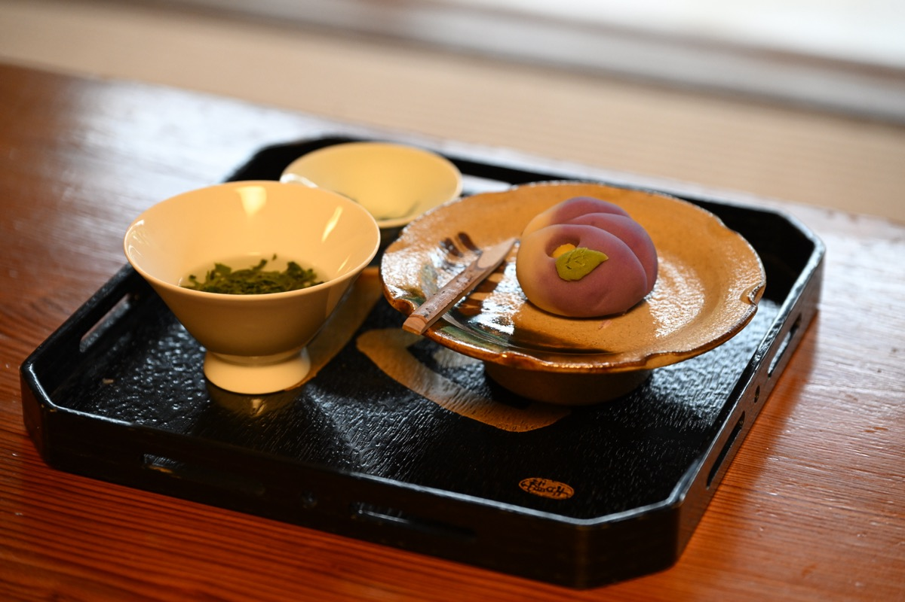
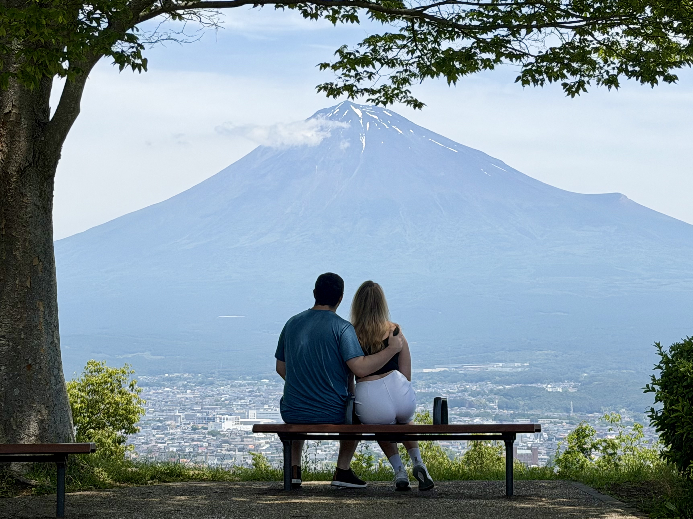
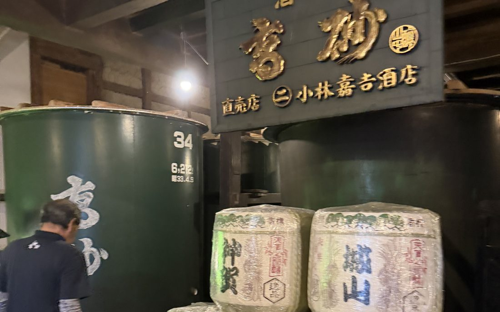
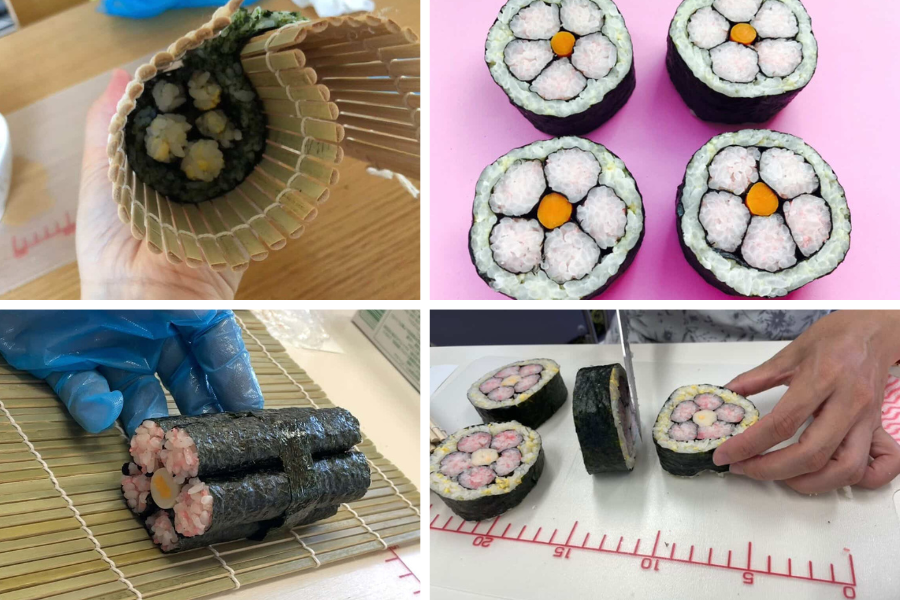

Wagashi sweets workshop
Shape seasonal Japanese sweets from white bean paste — a 400-year-old art refined alongside tea ceremony.
Step off the Tokyo–Kyoto Shinkansen at Shin-Fuji for a half-day stopover: a local-born guide, hidden viewpoints, the principal Fuji shrine and award-winning yakisoba — then back on your train, luggage and all.
★ 5.0 on Viator & Tripadvisor · Private — just your group · Luggage welcome
Free cancellation & free date change up to 24 h before · Instant confirmation.


It fits between your trains
Most Mt. Fuji tours cost you an entire day round-tripping by bus from Tokyo. A Shin-Fuji stopover changes that: the Shinkansen drops you right at the mountain's foot — the easiest way to see Mt. Fuji between Tokyo and Kyoto. We meet you at the gate, tour for four hours, and have you back on your train with buffer to spare.
Times are examples — after booking, send us your train times and we plan the day around them. Only Kodama trains stop at Shin-Fuji (covered by JR Pass).
Your four hours
Your guide was born in the shadow of the mountain. Every tour is tailored to the weather, the season, and you — this is a typical highlights day.
Meet at the station gate
Your guide is waiting with a sign. Luggage goes in the van or station lockers.
Hidden Mt. Fuji viewpoint
Picked the morning of your tour from seven local spots — bridge, plateau with cows, lakeside mirror, or the famous convenience-store shot.
Principal shrine of Fuji worship
Fujisan Hongu Sengen Shrine — where climbing the mountain traditionally began. Your guide explains why it matters.
Award-winning yakisoba lunch
Fujinomiya's B-1 Grand Prix soul food, at a family-run spot locals queue for. ~¥900.
Green tea or matcha at an award-winning tea house
Green tea that has won Japan's Prime Minister's Award, served with seasonal sweets in a tea house built from a single 400-year-old tree.
Back at your platform
With buffer time for souvenirs before your train onward.



Honest answer to the big question
Fuji shows itself fully on roughly one day in three. We don't pretend otherwise — we plan for it, checking visibility in real time and rerouting by the hour.
Unfortunately the day we were at Mount Fuji it was raining. Our guide immediately found an alternative activity we thoroughly enjoyed — a private tea ceremony. The food was amazing!— Annette M. · February 2026 · Viator · ★★★★★
Make it yours
Optional experiences hosted by local masters and family businesses. Reserve them with your booking — we confirm availability before your tour date.

Shape seasonal Japanese sweets from white bean paste — a 400-year-old art refined alongside tea ceremony.

Learn the traditional preparation under expert guidance, then drink the bowl you made. Tatami or table seating.
A traditional oharai ceremony performed by shrine priests inside the main hall — open to everyone.

Up to three sakes in mini cups, brewed with pure Mt. Fuji spring water. The free tasting is the 190-year-old brewery's courtesy to browsing customers — no obligation to buy if nothing wins you over.

A guided look inside the working brewery, tasting included — offered as the brewer's courtesy, so reserve ahead. Note: the route includes steep stairs.

Dress in kimono with professional help and walk the principal Fuji shrine — photos included in the scenery.

A tea master prepares matcha before you with full explanation — omotenashi in a traditional tea room. The master is engaged for your session, so we recommend booking a month or more ahead.

Roll peach-blossom patterned sushi, an Edo-era festival art — no raw fish. Eat it on-site or take it onto your train. Hosted at the tea house.
How to add: mention any experience in the booking notes, or message us after booking — we check availability and confirm before your tour date.
Book your date first →What travelers say
★★★★★ 5.0 · Viator & Tripadvisor
"Taku is an amazing guide! He took us to all the local spots, picture view points, and made this experience one we will never forget."
"A brilliant guide from the start! He took us to his favourite local spots for mountain views, delicious Yakisoba for lunch, and a traditional tea experience. Clear views of Mt. Fuji all day!"
"We do many private tours and this was the best. The English is outstanding. The stops chosen were spot on. A wonderful ambassador for Japan."
"He customized our tour to our interests and made it a delightful experience. His warm hospitality, friendliness and personality left us with a wonderful impression."
"Unfortunately the day we were at Mount Fuji it was raining. Our guide immediately found an alternative activity we thoroughly enjoyed — a private tea ceremony. The food was amazing!"
Book direct — instant confirmation
4 hours · up to 5 guests · private van, local-born bilingual guide, hidden spots. After booking, send your train times and we tailor the day.
15% off applied · ends June 16
Free cancellation & date change (24 h+) · Instant confirmation · Secure checkout
Non-JPY prices are approximate. Groups of 6+? See FAQ.
Before you book
Bring it along — the van has luggage storage for up to 3 guests' large cases. Larger groups use station lockers (¥300–800, cash). You'll have everything with you when you board your next train.
Only the Kodama (こだま) — not Nozomi or Hikari. It's covered by the JR Pass and usually less crowded. Tip: sit in seat E from Tokyo or seat A from Kyoto/Osaka for Fuji views from the train.
Honestly: it varies by season — winter is clearest, summer is shyest. The earlier your tour starts, the better your chances. And if the mountain hides, the cloudy-day plan (shrine prayer, sake brewery, teahouse, UNESCO Center) is why guests still leave five-star reviews. See the “What if Mt. Fuji hides?” section above.
Yes — full refund or free date change with 24+ hours notice. Within 24 hours, no refund. Cancelling takes one click from your confirmation email.
Yes, with a larger van (+¥100,000) — contact us before booking. Groups over 10 need multiple vehicles.
Children under 6 need a child seat by Japanese law — contact us in advance and we'll arrange it.
Yes — add extra hours at $100/hour. Select the quantity at checkout or message us after booking.
Wheelchairs unfortunately can't be accommodated, but we welcome up to 3 guests using walkers and adjust the route to minimize walking. Tell us when booking.
Questions first?
Your fastest way to get answers